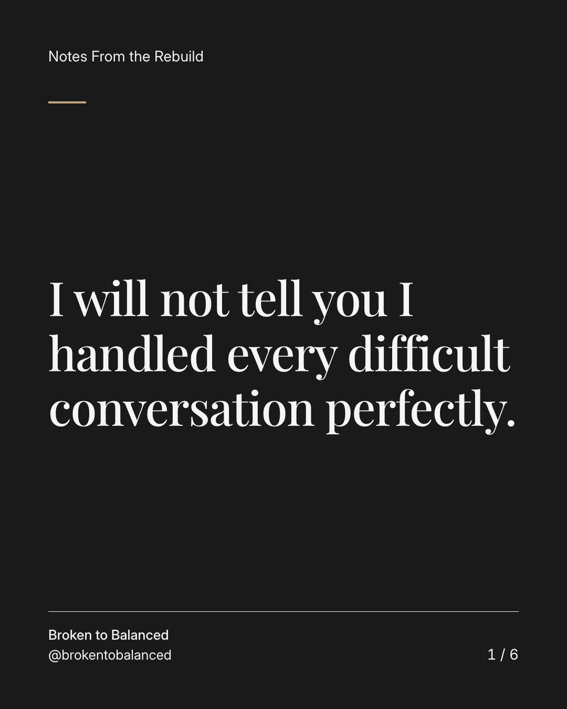
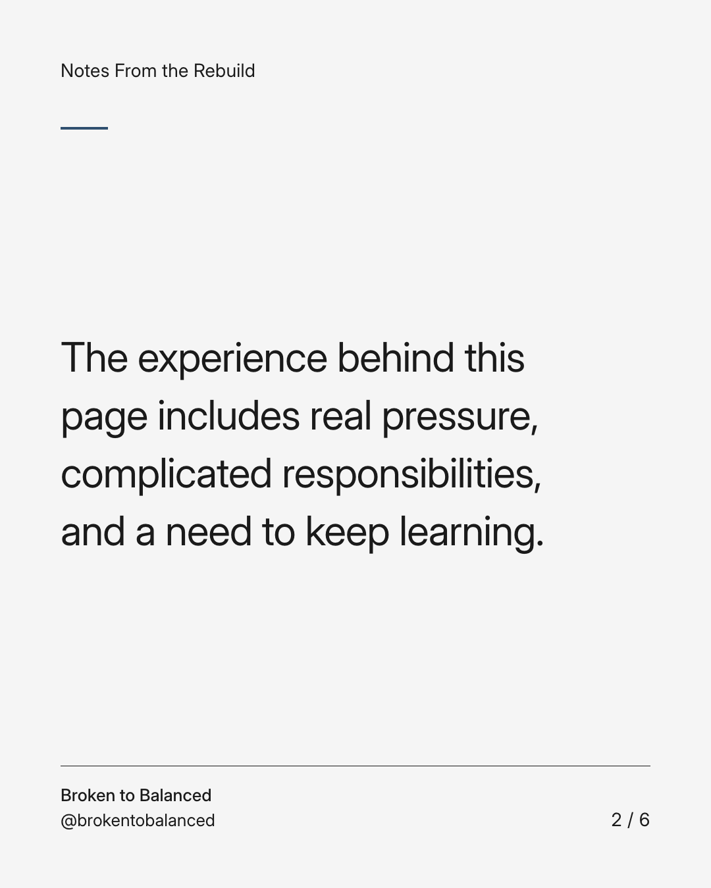
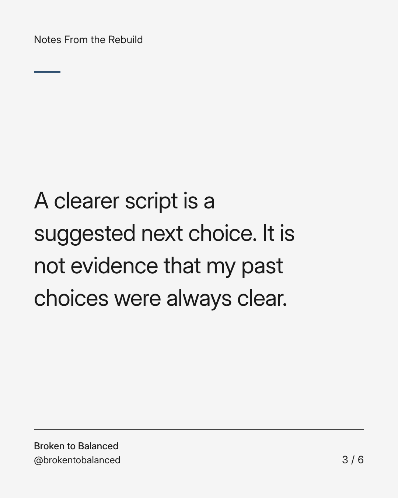
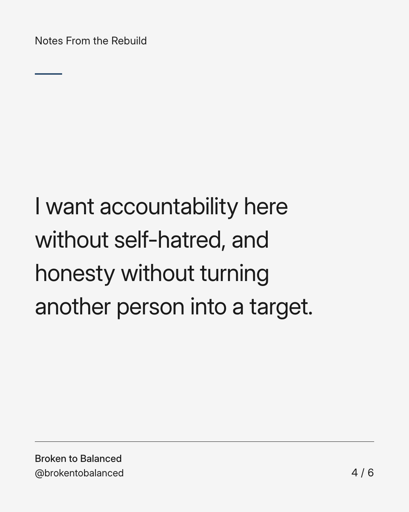
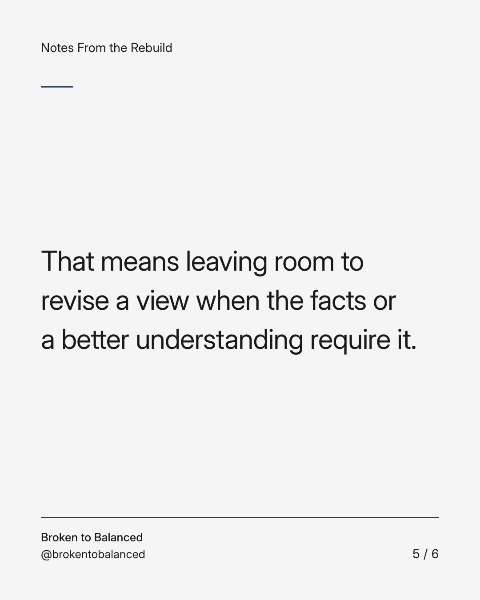
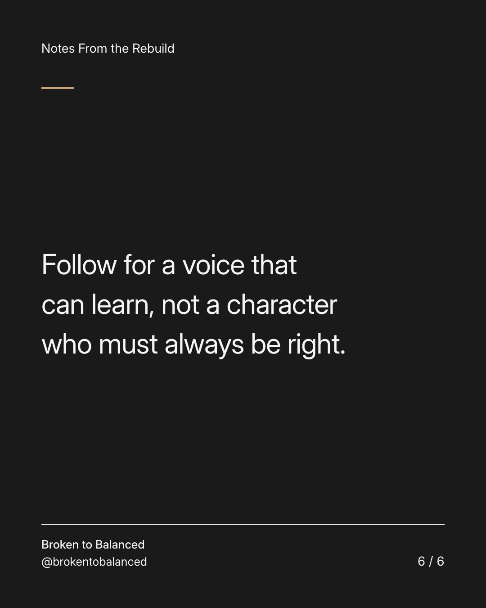

Exact text and accessibility text
I will not tell you I handled every difficult conversation perfectly.
Slide 1 of 6. I will not tell you I handled every difficult conversation perfectly.


Exact text and accessibility text
The experience behind this page includes real pressure, complicated responsibilities, and a need to keep learning.
Slide 2 of 6. The experience behind this page includes real pressure, complicated responsibilities, and a need to keep learning.


Exact text and accessibility text
A clearer script is a suggested next choice. It is not evidence that my past choices were always clear.
Slide 3 of 6. A clearer script is a suggested next choice. It is not evidence that my past choices were always clear.


Exact text and accessibility text
I want accountability here without self-hatred, and honesty without turning another person into a target.
Slide 4 of 6. I want accountability here without self-hatred, and honesty without turning another person into a target.


Exact text and accessibility text
That means leaving room to revise a view when the facts or a better understanding require it.
Slide 5 of 6. That means leaving room to revise a view when the facts or a better understanding require it.


Exact text and accessibility text
Follow for a voice that can learn, not a character who must always be right.
Slide 6 of 6. Follow for a voice that can learn, not a character who must always be right.
Exact caption
Plain-text fallback: select and copy the caption.